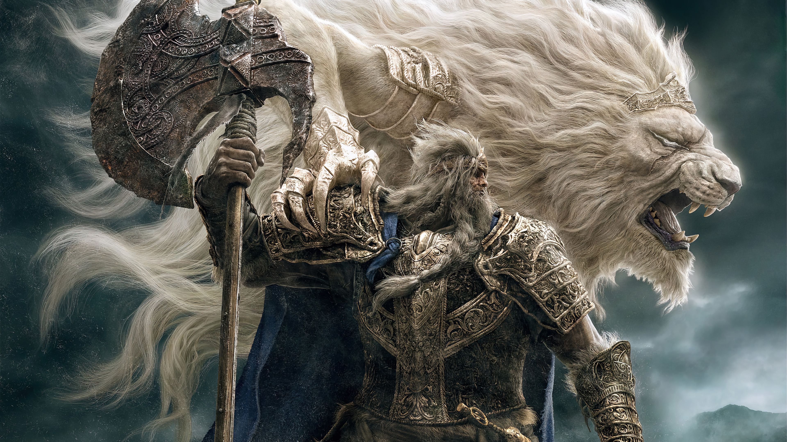
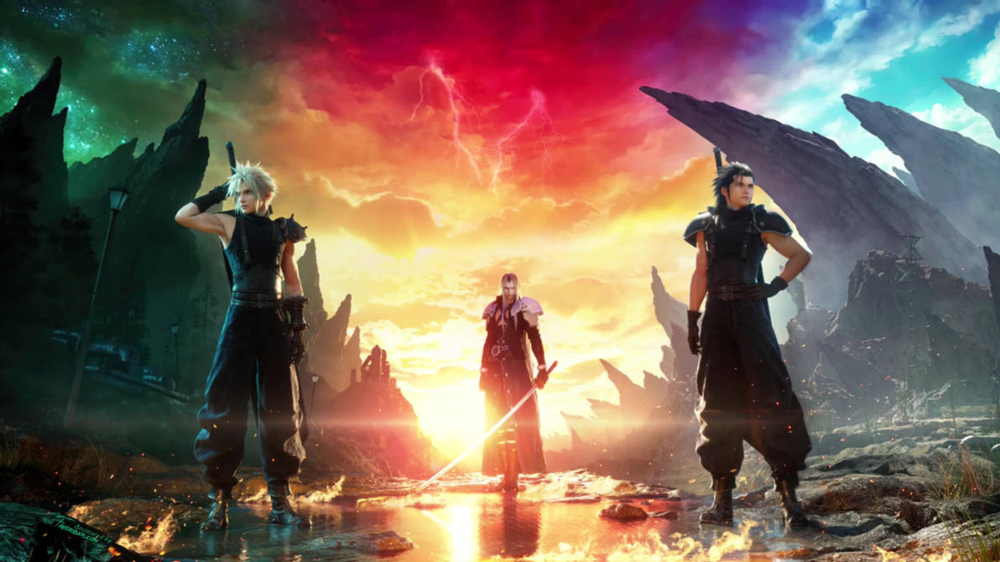
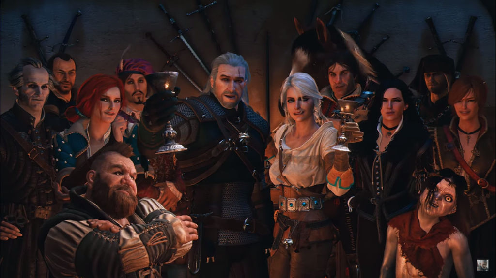
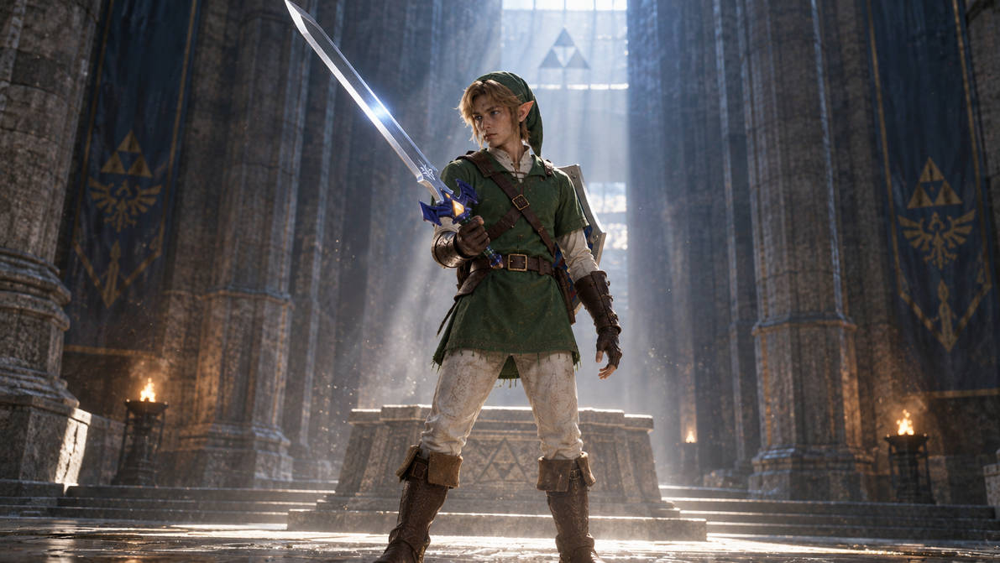

Esse aclamado RPG da FromSoftware, feito sob a direção de Hidetaka Miyazaki e mitologia criada por George R. R. Martin (Game of Thrones), Elden Ring segredos de desenvolvimento, mecânicas ocultas e detalhes profundos de lore, que não são ditos em diálogos, mas sim itens, equipamentos, monstros e designs dos personagens.
George R. R. Martin ajudou a criar parte da mitologia do universo de Elden Ring.

O Final Fantasy VII Remake, foi lançado originalmente em 2020 pela Square Enix, e não é apenas uma atualização gráfica do clássico de 1997. Ele traz uma série de segredos, referências e decisões de design fascinantes.

Aclamado jogo de RPG de ação em mundo aberto, The Witcher 3: Wild Hunt lançado em 2015 pela desenvolvedora polonesa CD Projekt RED. No papel de Geralt de Rívia, um caçador de monstros profissional, você explora um universo vasto baseado na mitologia eslava para encontrar sua filha adotiva, Ciri, enquanto ela é perseguida pela Caçada Selvagem.

The Legend of Zelda: Ocarina of Time é amplamente considerado um dos maiores e mais influentes jogos eletrônicos de todos os tempos. Lançado originalmente em 1998 para o Nintendo 64 pela Nintendo, o título marcou a transição histórica da franquia para os gráficos em 3D, estabelecendo mecânicas revolucionárias que definiram o gênero de ação e aventura. O remake para Nintendo Switch 2 (2026): Uma nova versão totalmente reconstruída do zero chega em 5 de novembro de 2026. O título promete dublagem e legendas oficiais em Português do Brasil, gráficos modernos impressionantes e câmeras livres.